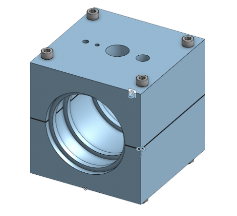
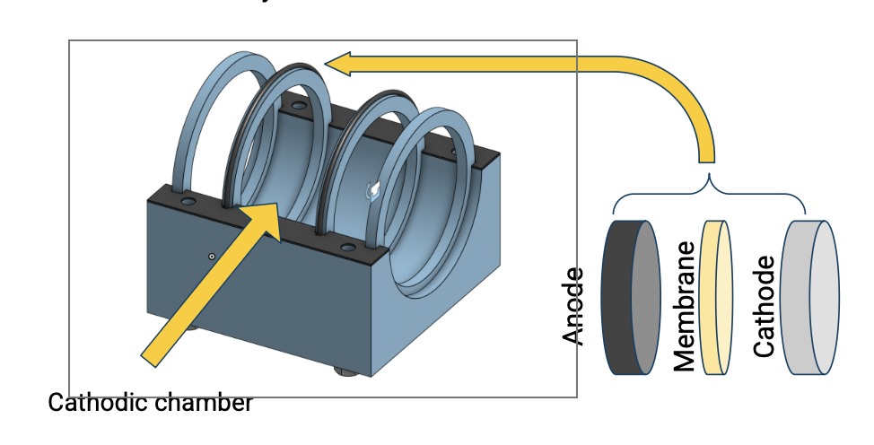
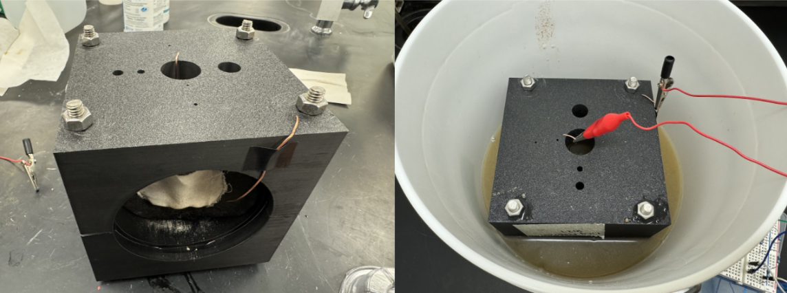

As the Mechatronics Subteam Leader of Michigan Carbon Capture, I lead the development of a microbial electrolytic carbon capture (MECC) system designed to remove dissolved carbon dioxide from wastewater while simultaneously generating hydrogen as a sustainable energy source. The project focuses on creating a scalable and energy-efficient carbon capture solution capable of integration into existing municipal wastewater treatment plants. I lead a team of engineers tasked with redesigning the previously researched pump-driven system to a fully diffusion-based electrochemical device, which significantly reduces energy consumption, mechanical complexity, and operational cost. I designed and prototyped the resin-based housing system in CAD and tested multiple 3D-printed reactor iterations. I also worked on the integration and validation of embedded sensing systems used to monitor electrochemical performance in real time. This included implementing sensor interfaces for pH, dissolved CO2 concentration, and hydrogen production using a NUCLEO microcontroller. Additionally, I contributed to system testing, reaction-rate analysis, and validation of theoretical hydrogen and calcium carbonate production yields. Our team’s work was recognized through winning the OpenAir Carbon Removal Challenge in the spring of 2026.


